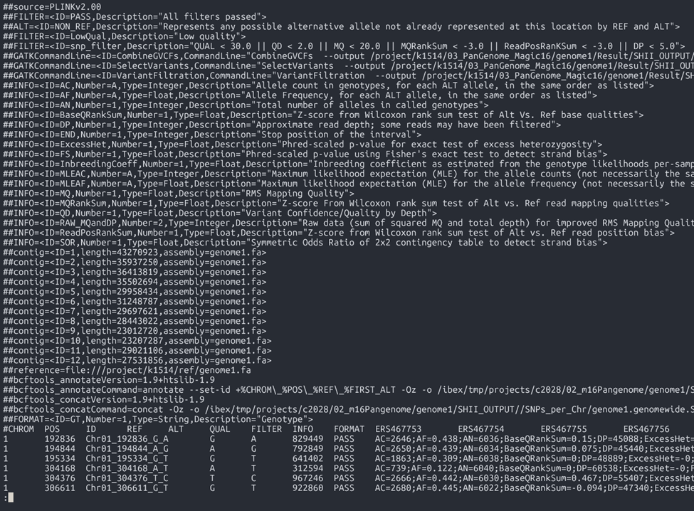
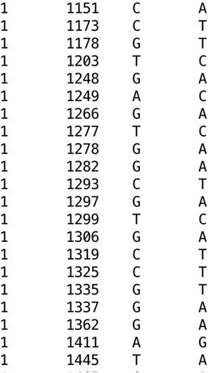
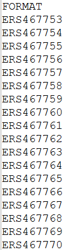
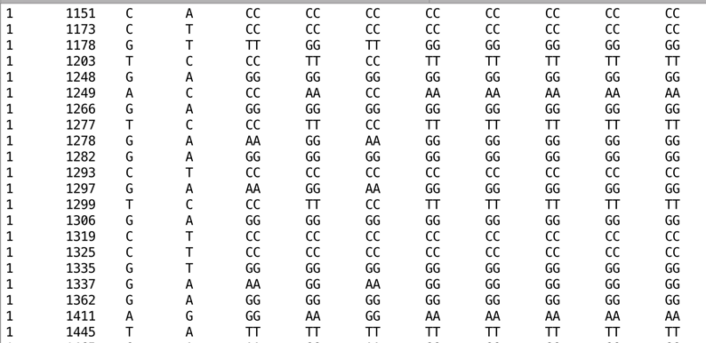
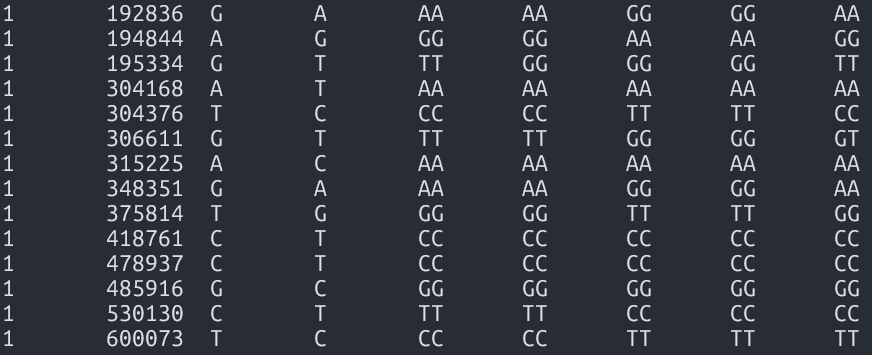
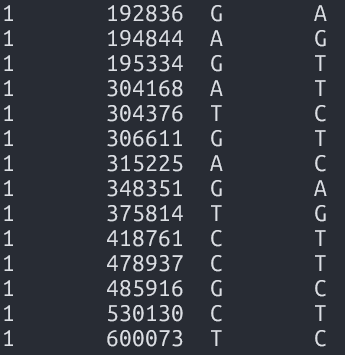
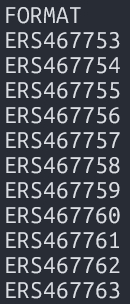
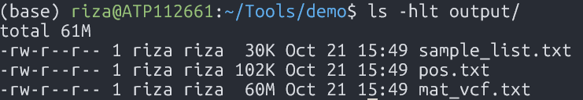

By Riza May Pasco
Explains the workflow for transforming genomic datasets, including the conversion of VCF files into HDF5 formats for integration into the database.
Note: To follow along this module, make sure to have completed the Day 4 setup guide.
THE TWO-STEP PROCESS
The data preparation involves two main steps:
- Convert VCF to text matrix - Using custom scripts with awk and/or bcftools
- Convert text matrix to HDF5 - Using a compiled C++ program for optimized storage
STEP 1: VCF TO TABULAR TEXT MATRIX, SAMPLE LIST, AND SNP POSITIONS
INPUT FILE (VARIANT CALL FORMAT)
A standardized file format used to store genetic variants, including their genomic positions, reference and alternate alleles, quality scores, and sample-specific genotype data. The detailed specifications for the format can be found in the official VCF specification document.

OUTPUT FILES
- Matrix: This is a matrix with rows corresponding to SNPs. The columns represent the following (from left to right):
- CHR: Chromosome number
- POS: SNP position
- REF: Reference allele
- ALT: Alternate allele
- Sample columns: Diploid genotype calls (Sample1, Sample2, Sample3, etc.)
Note: Missing calls can be encoded by either 00 or .. (two dots)
- SNP Positions: Genomic coordinates for SNPs

- Sample list: A text file containing sample names (in the same order as in the genotype matrix)


PROCESS
* Download the script vcftomatrix.sh
invcf=${1? Input VCF file } # Raw_SNP_and_InDel/IRRI_lines_SNP_DP3_QD2_MQ30_QUAL30_FS60.vcf.gz}
pref=${2? Output dir}
mkdir -p $pref
bcftools query -f '%CHROM\t%POS\t%REF\t%ALT[\t%TGT]\n' $invcf | tr "|" "/" | \
tr -d "/" | \
sed "s:chr0\?::" | \
awk -v OFS="\t" '{$1 = $1 + 0; print $0}' > ${pref}/mat_vcf.txt
cut -f1-4 $pref/mat_vcf.txt > $pref/pos.txt
bcftools view -o - -h $invcf | grep CHR | tr "\t" "\n" | tail -n+10 > $pref/sample_list.txt
* Usage: ./vcftomatrix.sh <input_vcf> <output_prefix>
* Verification: These output files will be used in the next pipeline stage to create an HDF5 file.
- mat_vcf.txt

- pos.txt

- sample_list.txt

HANDS-ON EXERCISE
- Download the demo dataset here
- Extract the tar file:
tar -xzvf demo.tar.gz - Go to the demo folder:
cd demo - Run the script VCFtoMatrix.sh:
./scripts/vcftomatrix.sh dataset/sample.vcf output - Verification:
- mat_vcf.txt
- pos.txt
- sample_list.txt

STEP 2: TABULAR MATRIX TO HDF5
PROCESS
* Download the script make_HDF_dataset.sh
indir=${1? Input directory with files pos.txt sample_list.txt and mat_vcf.txt}
proj=${2? Output (project) prefix, e.g. ricerp }
#loadmatrix=./bin/loadmatrix_geno.v2.hdf1.10
loadmatrix=./loadmatrix_geno
n_snp=`wc -l $indir/pos.txt| awk '{print $1}' `
n_sampl=`wc -l $indir/sample_list.txt| awk '{print $1}' `
m=1000
n=64
if [[ ! -f "Matrix.txt" ]] ; then
ln -s $indir/mat_vcf.txt Matrix.txt
fi
# Transposed version: r=n_snp
r=$n_snp
$loadmatrix -m $m -n $n -r $r \
-t \
-o ${proj}_transp.h5 \
# -i $indir/mat_vcf.txt
* Usage: ./make_HDF_dataset.sh <path_text-file-matrix> <output_prefix>
* Verification: Check the HDF5 file structure after creation (*.h5)
h5ls <output_prefix>_transp.h5
Expected output: Dataset {SNPs, Samples}
HANDS-ON EXERCISE
- Run the following command:
./scripts/make_HDF_dataset.sh output/ sample - Verification:
h5ls sample_transp.h5 - Output:
data Dataset {6920, 3024}
CHECKPOINT
✅ HDF5 file
✅ SNP positions
✅ Sample list